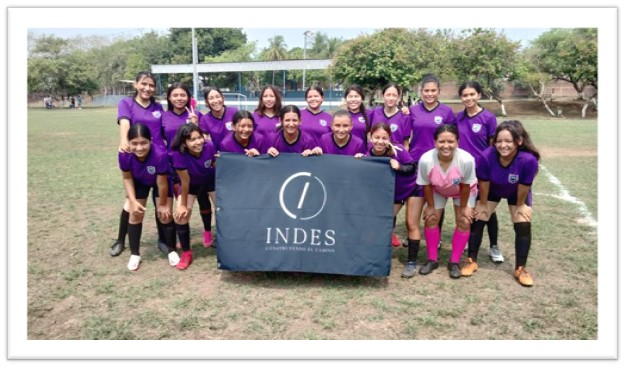

Actividades Extracurriculares
El Instituto Nacional Ernesto Flores promueve diversas actividades extracurriculares que enriquecen la experiencia educativa de los estudiantes.
Reina de las Flores
Participan distintos estudiantes, como por ejemplo las señoritas, su participación es ser candidatas, para ello hacen ensayos. Y a la celebración pueden llegar personas particulares.
Sud 17 Selecta Femenina y Masculina INEF 2024
En nuestro instituto, tanto como las otras instituciones, se organiza un torneo de fútbol 11 donde cada institución compite. Se eligen estudiantes de 15 a 17 años para formar parte de un equipo. En nuestra institución, se eligieron 20 chicos y 20 chicas, quienes realizaron un fogueo para seleccionar a los mejores, resultando en 13 elegidos para cada equipo. Ambos equipos lograron llegar a la semifinal, lo que fue un gran logro para nuestro instituto.
Día del Alumno
Se realizan actividades de juegos donde los alumnos pueden participar activamente en baile, canto y juegos divertidos. Se pone un ambiente alegre con música y refrigerios para distraer a los estudiantes de sus estudios.
Antorcha
Esta actividad simboliza el inicio de uno de los eventos más importantes a nivel nacional, incluyendo una ceremonia donde los estudiantes pasan una antorcha, representando la transmisión de conocimientos y valores.
Miss Independencia
En esta actividad se realiza un concurso de belleza que evalúa habilidades, talentos y cualidades específicas, abarcando diversas áreas como la belleza y la música.
Concurso de Cantos
Evento donde estudiantes compiten mostrando sus habilidades vocales en diferentes formatos, como solistas, dúos o grupos, celebrando su pasión por la música.
Concurso de Dibujos
Evento en el que los participantes compiten mostrando sus habilidades artísticas a través de la creación de obras de arte.
Concurso de Creación de Textos Literarios
Se invita a los participantes a escribir y presentar obras originales, ya sea en forma de relatos, poesías, ensayos o dramaturgia.
Recreos Dirigidos
Actividades organizadas en centros comunitarios para fomentar el desarrollo social, emocional y físico de los participantes, incluyendo juegos y deportes.
Día de Logros
Evento celebrado para reconocer y celebrar los logros de los estudiantes a lo largo de un periodo determinado, como un semestre o un año escolar.
Feria de Emprendimiento
Evento diseñado para promover la innovación y el espíritu empresarial, donde emprendedores y pequeñas empresas exhiben sus productos y servicios.